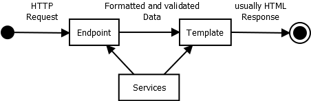

OOP gained popularity over time as the best way to write complex applications. Yet it is not suitable for web backends. PHP is a object capable language, not object oriented: it supports objects creation, but the HTML assembling is a procedural task. To avoid confusion, lets define procedural objects as objects used in procedural paradigm that have these features: Pseudonamespaces are objects which are created in a single instance, serving as namespace with settings function (constructor). Pawns are objects created in multiple instances whose methods are not called externally.
OOP program, once started, models reality in some encoded way. It can run indefinitely and is stopped when the model is no longer needed. Procedural program is expected to end after certain amount of steps (it has its Time Complexity O). It is desirable to make it quick.
In OOP objects usually wait for events in idle state utilizing threads. In PHP assembling HTML everything is synchronous and program runs in a single thread.
In OOP there is no global state: every piece of information belongs to some object. PHP supports global functions and global variables. Even superglobal variables, shared in every context.
Now it should be obvious that OOP Framework in PHP is misconception. Therefore we abandon OOP architectonic patterns like MVC or MVP and create procedural architectonic pattern. PWF could also stand for Procedural Web Framework.
Hypertext preprocessing starts with TCP request. There are full duplex protocols like WS or MQTT, but for most webs, lets focus on HTTP. In its request-response lifecycle, the program starts with client's request and ends with server's response.
To start the program, we need Endpoints where the requests can land. PWF suggests you create some of these:
The general web workflow utilizing GET endpoint can be designed as follows. From the architectonic perspective, the endpoint code obtains HTTP request as input and produces formatted data output, which it sends to the right template.

The arrows means workflow here: request causes response. Should we have dependency diagram, the arrows would face opposite direction: response depends on request. This is Inversion of Control pattern. Response should depend (directly or not) on everything. (If it doesn't depend on something, we can safely remove it from the system). Services are not dependent on the request-response workflow.
In the next step we will discuss the endpoints details.